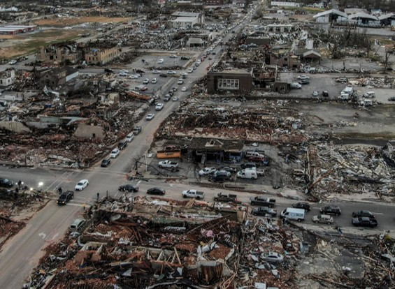
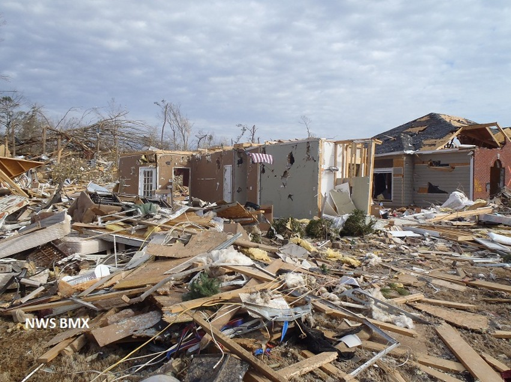
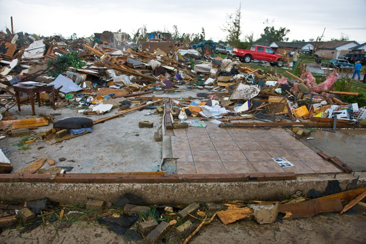
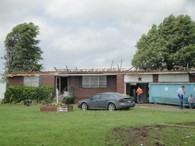
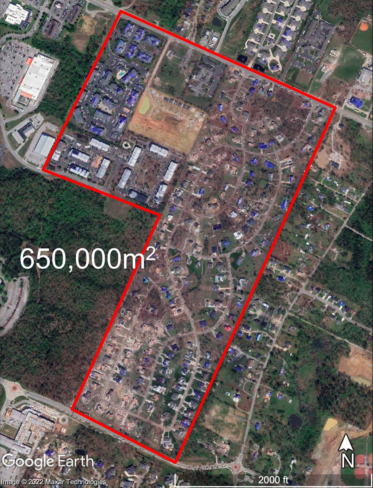
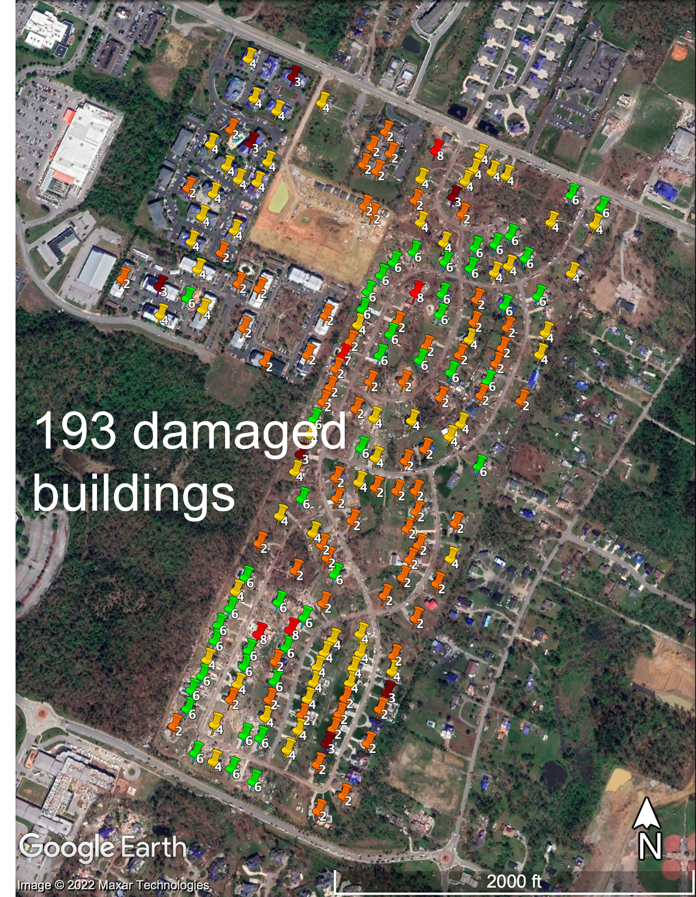
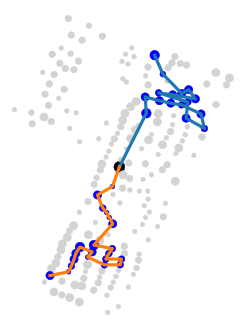
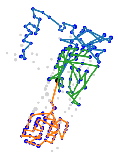
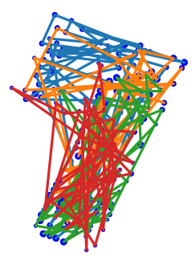

Damage-Informed Drone Reconnaissance
From Building Damage Recognition to Drone Mission Planning
After disasters, responders must rapidly identify damaged buildings and prioritize follow-up inspections. We connect AI-based damage recognition with drone mission planning to support targeted disaster reconnaissance.
01 — The Problem
Seeing the Damage Is Not Enough.
Drones can capture extensive imagery of disaster-affected areas, but interpreting building damage and deciding where to inspect next remain challenging. Damage assessment and drone mission planning are often disconnected.

02 — Building Damage Recognition
Identifying Damage from Aerial Imagery.
We developed a deep-learning model to detect and classify building damage, trained on 24,496 annotated damage instances and achieving 71.9% mean average precision on test data.
- Annotated damage instances
- 24,496
- Mean average precision
- 71.9%


Explore all six damage levels

03 — Damage Mapping
Turning Damage Recognition into Spatial Information.
In a Chattanooga-area tornado case study, recognition results were used to manually map 193 damaged buildings and their damage severity, providing spatial information for subsequent mission planning.


Original geographic map → Inferred building damage map.
Imagery: Google Earth · © 2022 Maxar Technologies.
- Damaged buildings mapped in the case study
- 193
The damage map was manually constructed from recognition results.
04 — Damage-Informed Mission Planning
Prioritizing Where Drones Inspect Next.
We integrated building damage information into drone task assignment and route optimization, prioritizing more severely damaged buildings while accounting for drone availability, flight speed, and battery constraints.
Low resources

- Available drones
- 2 UAVs
- Flight speed
- 2.1 m/s
- Battery life
- 10 minutes
Moderate resources

- Available drones
- 3 UAVs
- Flight speed
- 4.6 m/s
- Battery life
- 20 minutes
High resources

- Available drones
- 4 UAVs
- Flight speed
- 6.1 m/s
- Battery life
- 30 minutes
Damage-informed routes under different drone resource constraints.
Mission planning was evaluated computationally using a real disaster case study, without autonomous field deployment.
Research Contribution
Connecting Damage Assessment with Reconnaissance Planning.
This research demonstrates how AI-based damage recognition can inform drone mission planning, helping direct follow-up inspections toward more severely damaged buildings.
Publications
Journal Article · 2023
Da Hu, Shuai Li, Jing Du, Jiannan Cai. Automating Building Damage Reconnaissance to Optimize Drone Mission Planning for Disaster Response. Journal of Computing in Civil Engineering, 37(3), 2023.
Research Report · 2022
Shuai Li, Amirsalar Moslehy, Da Hu, Mengjun Wang, Nicholas Wierschem, Khalid Alshibli, Baoshan Huang. Drones and Other Technologies To Assist in Disaster Relief Efforts. Tennessee Department of Transportation, RES2021-05, 2022.